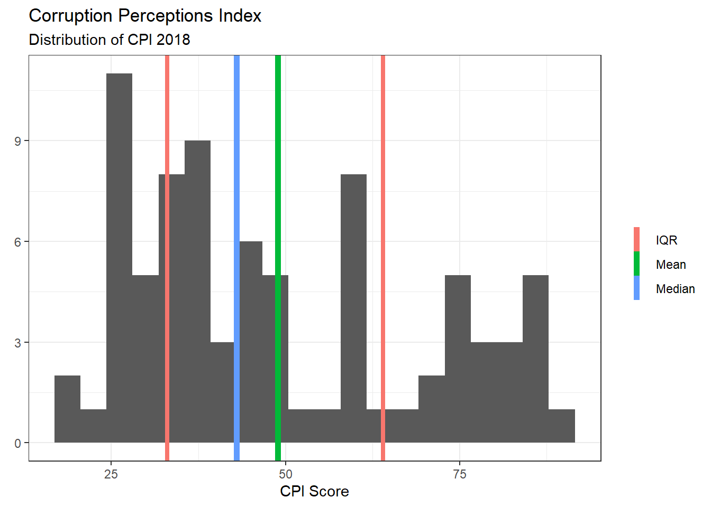
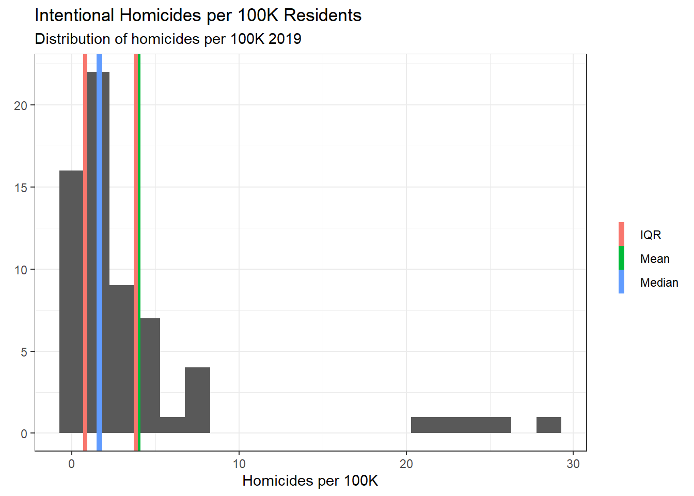
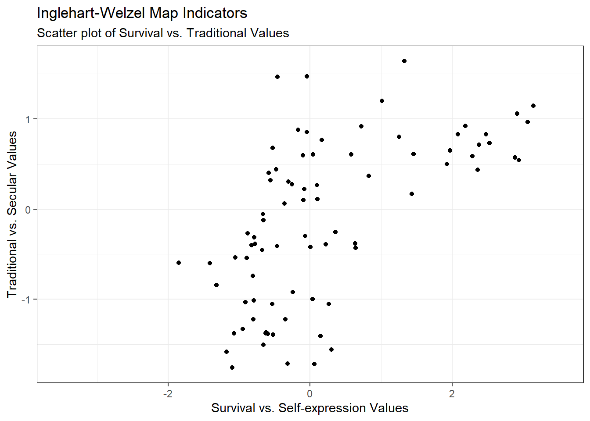

Error in library(stargazer): there is no package called 'stargazer'DACSS 603: Final Part 2
finalpart2
Tory Bartelloni
What Affects Trust in Government?
Introduction
One of the foundational building blocks of a stable society is its government. Perhaps especially in modern times where populations are often large in size, spread over vast distances, and societies are interconnected in ways never before observed in the historical record. It is thus governments that play a pivotal role in mediating relationships within the state and between states. When viewed as part of a social ecosystem, a financially healthy and legitimate government is one core pillar in a stable society (Turchin 2013).
The concept of political trust can be succinctly understood as the condition when a people or person expect their government will act in their interest and do the right thing in the absence of constant scrutiny (Miller 1990). Given that this is the case, it is not a far leap to say that political trust is one mechanism by which a government can gain and retain legitimacy. Furthermore, research has shown that trust in government is critical for governments to be able to operate without coercive techniques and be able to collect and allocate resources for collective projects (Hetherington 2006). With this in mind we find it reasonable to seek an understanding of why a person or group of people would trust and have confidence in their government.
Research indicates that at least three types of factors have an impact on a group’s level of trust in their government. The first set of factors are related to the public’s perception of government performance. Multiple studies have observed that the approval of government action or responsiveness, control over crime and the economy, and the perception of corruption all had significant effects on trust in government (Keele 2007; Catterberg 2006).
The second set of factors relate to the economy. Perceptions of both micro and macro economic health have been observed to have significant positive effects on trust in government (Keele 2007; Catterberg 2006). While other economic factors such as income inequality, economic growth rates, and structural unemployment have shown ties to trust in government, but not as strong as the perceptions of economic health mentioned previously (Lawrence 1997; Foster and Frieden 2017).
The last set of factors to consider are cultural factors. We see this set of factors in two differing settings. The first is observed when values within a society change. One such instance is the shift toward individualism and postmaterial values that caused a decline in respect for authority (Inglehart 1999) or where a decline in social capital was shown to have significant negative effects on trust in government (Keele 2007). The second setting is between societies. Francis Fukuyama describes this phenomenon well, showing how trust operates differently in different cultures with the implication that reasons for trust and the mode of trust differs between groups (1996).
To this point there has been no consensus or holistic model that produces a satisfactory answer to the question why do groups trust their government? In this study I will try to bring us one step closer by examining a model that takes into account aspects from each of the sets of factors just described.
Research Question and Hypothesis
The level of trust a population has in its government both provides the government with legitimacy and, likely as a direct consequence, allows the government to operate and implement large scale projects on behalf of the population it governs. To understand how to build and maintain legitimate and effective government we need to better understand the factors that allow for this condition to exist.
Research Question
What factors affect a population’s trust in their government?
Prior research has indicated that trust in government is affected by factors that I will put in three broad categories: perception of government performance, economic health, and cultural values. Using information available through the World Bank, Transparency International, and the World Values Survey and European Values Study I will examine a specific aspect of government influence: whether the level of political freedom and access to political participation has an affect on the population’s overall trust in their government.
Hypothesis
H0: A population’s trust in their government is not affected by the levels of political freedom and political participation made possible within the country.
H1: A population’s trust in their government will be positively related to the levels of political freedom and political participation possible within the country.
Methodology
The Dependent Variable
In order to do this we must establish a measurement for political trust. I will start by acknowledging that a consistent, trusted measure of trust in government on an international scale is not easily available. In this study we will use a survey measurement from the World Values Survey and European Values Study joint data set that asks about personal confidence in government. We do this because we have a high degree of trust in the measurement and because we can draw strong correlations between confidence and trust in government measures.
The World Values Survey and European Values Study collect data by conducting representative surveys in around 100 countries every five years (note: the number of countries has expanded over their active years). Their surveys are specifically designed to gather public opinions on values ranging from political, religious, and social. The question we will use is “…for each item listed, how much confidence you have in them…” and responses to the sub-item “Government”. The possible answers are on a 4 point scale ranging from “A great deal” to “None at all”. In the latest iteration of their survey we are able to get measurement of confidence in government from 87 countries. Our question focuses on groups so in this study we aggregate the survey data to the country level.
The Independent Variables
The independent or explanatory variables we use vary in their sources and formats so I will spend some time discussing each source and the variables used from each.
World Governance Indicators Project
The World Governance Indicators are a combination of enterprise, citizen, and expert survey respondents from around the world. They use more than 30 surveys to create their six indicators with each indicator using different surveys and data from the surveys to aggregate to the final indicator. The one I am most interested in is Voice and Accountability which attempts to measure the level of political freedom (i.e. freedom of speech, press, etc.) and access to participation in governance by the public (i.e. free and fair elections). This will be the explanatory variable we will focus on for understanding effects, while the remaining independent variables will be used to control for effects.
World Bank Development Indicators
The World Bank Development Indicators are taken from a wide variety of sources. We will be using two primary indicators: GDP per capita and Intentional Homicides per 100K people. GDP per capita is derived from the World Bank and OECD National Accounts data while Intentional Homicides are taken from the UN Office on Drugs and Crime’s International Homicide Statistics database.
World Values Survey and European Values Study
In addition to our dependent variable being from this data set we will also be using the Inglehart Welzel Cultural Map that is derived from the World Values Survey. This map is derived through factor analysis of 10 individual indicators included in the survey and is designed to express broad underlying dimensions of cross-culture variation.The two major dimensions that comprise the categories are Traditional vs. Secular-rational values and Survival vs. Self-expression values. We get indicators for each of these dimensions as well as a categorical assignment for each country from those indicators. The category assignments are somewhat more subjective, but does well to take into account other, broader cultural factors not explicit in the data.
Transparency International
The Corruption Perceptions Index (CPI) is created by Transparency International by taking a combination of 13 different data sources including assessments and surveys. These sources are largely comprised of experts and business interests so are not a direct reflection of the general public but a broader sense of the corruption perceived to be inherit in the country. The scores from each of the sources are standardized, averaged, and then scaled to provide a score for each of the countries in the data sources. What we end up with is Corruption Perception Score between 1-100 for each of the countries.
Descriptive Statistics
Below I will provide an overview of each data set and the key variables I use from each.
Summary of Data
First things first, I will include a brief look at the data set and then we will look at the specifics.
Code
knitr::kable(str(data_final))'data.frame': 81 obs. of 13 variables:
$ Country_Final : chr "Denmark" "New Zealand" "Finland" "Singapore" ...
$ WGI_Voice_Accountability : num 1.545 1.535 1.565 -0.206 1.561 ...
$ GDP_per_Capita_PP : num 57162 43110 48583 98283 52851 ...
$ GDP_per_Capita : num 59776 42865 48629 65831 51939 ...
$ Homicides_per_100K : num 1.143 2.634 1.591 0.207 1.106 ...
$ Unemployment : num 5.02 4.11 6.69 3.1 6.83 ...
$ CPI.Score.2018 : int 88 87 85 85 85 85 84 82 81 80 ...
$ Gov_Confidence : num 0.408 0.539 0.453 0.819 0.539 ...
$ Gov_Confidence_Mean : num 2.69 2.45 2.63 1.99 2.5 ...
$ Survival : num 2.9177 2.8837 2.4782 -0.0969 3.1443 ...
$ Traditional : num 1.0599 0.5741 0.8324 0.0998 1.1486 ...
$ Cultural_Map : Factor w/ 8 levels "African-Islamic",..: 7 4 7 8 7 7 7 7 4 7 ...
$ WGI_Voice_Accountability_Poly2: num 2.3876 2.357 2.4488 0.0424 2.4365 ...Code
knitr::kable(summary(data_final))| Country_Final | WGI_Voice_Accountability | GDP_per_Capita_PP | GDP_per_Capita | Homicides_per_100K | Unemployment | CPI.Score.2018 | Gov_Confidence | Gov_Confidence_Mean | Survival | Traditional | Cultural_Map | WGI_Voice_Accountability_Poly2 | |
|---|---|---|---|---|---|---|---|---|---|---|---|---|---|
| Length:81 | Min. :-1.7968 | Min. : 2221 | Min. : 855.8 | Min. : 0.2067 | Min. : 0.50 | Min. :17.00 | Min. :0.08744 | Min. :1.561 | Min. :-1.84730 | Min. :-1.76002 | African-Islamic :22 | Min. :0.000042 | |
| Class :character | 1st Qu.:-0.5154 | 1st Qu.:12486 | 1st Qu.: 4604.6 | 1st Qu.: 0.7857 | 1st Qu.: 3.67 | 1st Qu.:33.00 | 1st Qu.:0.24247 | 1st Qu.:2.504 | 1st Qu.:-0.65383 | 1st Qu.:-0.92193 | Catholic Europe :14 | 1st Qu.:0.104813 | |
| Mode :character | Median : 0.1687 | Median :22066 | Median :10076.4 | Median : 1.6314 | Median : 5.01 | Median :43.00 | Median :0.38584 | Median :2.797 | Median :-0.09693 | Median :-0.05596 | Orthodox Europe :12 | Median :0.734658 | |
| NA | Mean : 0.1641 | Mean :27597 | Mean :19974.7 | Mean : 3.9043 | Mean : 6.66 | Mean :48.93 | Mean :0.41566 | Mean :2.711 | Mean : 0.22695 | Mean :-0.12081 | Latin America :10 | Mean :0.908872 | |
| NA | 3rd Qu.: 0.9790 | 3rd Qu.:41522 | 3rd Qu.:29554.5 | 3rd Qu.: 3.8069 | 3rd Qu.: 8.53 | 3rd Qu.:64.00 | 3rd Qu.:0.53356 | 3rd Qu.:3.018 | 3rd Qu.: 0.72326 | 3rd Qu.: 0.60743 | Protestant Europe: 8 | 3rd Qu.:1.513324 | |
| NA | Max. : 1.6552 | Max. :98283 | Max. :85334.5 | Max. :28.7367 | Max. :19.66 | Max. :88.00 | Max. :0.95441 | Max. :3.448 | Max. : 3.14431 | Max. : 1.64128 | Confucian : 5 | Max. :3.228473 | |
| NA | NA | NA | NA | NA’s :17 | NA | NA | NA | NA | NA | NA | (Other) :10 | NA |
We can see from the overview that the data has 81 observations of 12 variables. Each observation in the data is a country and there are observations for the variables we have discussed earlier. All of our variables of interest are continuous except the Cultural Map variable, which is a factor.
Transparency International
The Corruption Perceptions Index (CPI) is created by Transparency International The CPI Scores are not a direct reflection of the general public, but represent a broad view of corruption for the countries included. The Corruption Perception Score ranges between 1-100 for each of the countries.
Code
data_final %>% ggplot(aes(x=CPI.Score.2018)) +
geom_histogram(bins = 20) +
geom_vline(aes(xintercept=median(CPI.Score.2018,na.rm=TRUE),
color="Median"),
size=2) +
geom_vline(aes(xintercept=mean(CPI.Score.2018,na.rm=TRUE),
color="Mean"),
size=2) +
geom_vline(aes(xintercept=
quantile(CPI.Score.2018, probs=0.75, na.rm=TRUE),
color="IQR"),
size=1.5) +
geom_vline(aes(xintercept=
quantile(CPI.Score.2018, probs=0.25, na.rm=TRUE),
color="IQR"),
size=1.5) +
labs(title="Corruption Perceptions Index",
subtitle="Distribution of CPI 2018",
x="CPI Score",
y=element_blank(),
colour=element_blank()) +
theme_bw()
World Bank Development and Governance Indicators
The World Bank collects data from many different sources including two distinct projects in World Development Indicators and the World Governance Indicators project.
We will be using two primary indicators from the Development Indicators: GDP per capita and Intentional Homicides per 100K people. GDP per capita is derived from the World Bank and OECD National Accounts data while Intentional Homicides are taken from the UN Office on Drugs and Crime’s International Homicide Statistics database.
Code
data_final %>% ggplot(aes(x=GDP_per_Capita)) +
geom_histogram(bins = 20) +
geom_vline(aes(xintercept=median(GDP_per_Capita,na.rm=TRUE),
color="Median"),
size=2) +
geom_vline(aes(xintercept=mean(GDP_per_Capita,na.rm=TRUE),
color="Mean"),
size=2) +
geom_vline(aes(xintercept=
quantile(GDP_per_Capita, probs=0.75, na.rm=TRUE),
color="IQR"),
size=1.5) +
geom_vline(aes(xintercept=
quantile(GDP_per_Capita, probs=0.25, na.rm=TRUE),
color="IQR"),
size=1.5) +
labs(title="Gross Domestic Product per Capita",
subtitle="Distribution of GDP per capita 2019",
x="GDP per Capita",
y=element_blank(),
colour=element_blank()) +
theme_bw()
Code
data_final %>% ggplot(aes(x=Homicides_per_100K)) +
geom_histogram(bins = 20) +
geom_vline(aes(xintercept=median(Homicides_per_100K,na.rm=TRUE),
color="Median"),
size=2) +
geom_vline(aes(xintercept=mean(Homicides_per_100K,na.rm=TRUE),
color="Mean"),
size=2) +
geom_vline(aes(xintercept=
quantile(Homicides_per_100K, probs=0.75, na.rm=TRUE),
color="IQR"),
size=1.5) +
geom_vline(aes(xintercept=
quantile(Homicides_per_100K, probs=0.25, na.rm=TRUE),
color="IQR"),
size=1.5) +
labs(title="Intentional Homicides per 100K Residents",
subtitle="Distribution of homicides per 100K 2019",
x="Homicides per 100K",
y=element_blank(),
colour=element_blank()) +
theme_bw()
The World Governance Indicators are a combination of enterprise, citizen, and expert survey respondents from around the world. They use more than 30 surveys to create their six indicators with each indicator using different surveys and different data from each survey to aggregate to the final indicator. The one I am most interested in is Voice and Accountability which attempts to measure the level of political freedom (i.e. freedom of speech, press, etc.) and access to participation in governance by the population (i.e. free and fair elections). The indicators are normalized around 0 so we get values ranging approximately from -2.5 to 2.5.
Code
data_final %>% ggplot(aes(x=WGI_Voice_Accountability)) +
geom_histogram(bins = 20) +
geom_vline(aes(xintercept=median(WGI_Voice_Accountability,na.rm=TRUE),
color="Median"),
size=2) +
geom_vline(aes(xintercept=mean(WGI_Voice_Accountability,na.rm=TRUE),
color="Mean"),
size=2) +
geom_vline(aes(xintercept=
quantile(WGI_Voice_Accountability, probs=0.25, na.rm=TRUE),
color="IQR"),
size=1.5) +
geom_vline(aes(xintercept=
quantile(WGI_Voice_Accountability, probs=0.75, na.rm=TRUE),
color="IQR"),
size=1.5) +
labs(title="WGI Voice and Accountability",
subtitle="Distribution of Voice and Accountability 2019",
x="Voice and Accountability",
y=element_blank(),
colour=element_blank()) +
theme_bw() +
scale_x_continuous(limits = c(-2.5, 2.5))World Values Survey and European Values Study
Our dependent variable is based on one question where respondents are asked to indicate what level of confidence they have in their government. In the plot below it is displayed as a proportion of respondents that said they had at least some confidence in their government.
Code
data_final %>% ggplot(aes(x=Gov_Confidence)) +
geom_histogram(bins = 20) +
geom_vline(aes(xintercept=median(Gov_Confidence,na.rm=TRUE),
color="Median"),
size=2) +
geom_vline(aes(xintercept=mean(Gov_Confidence,na.rm=TRUE),
color="Mean"),
size=2) +
geom_vline(aes(xintercept=
quantile(Gov_Confidence, probs=0.25, na.rm=TRUE),
color="IQR"),
size=1.5) +
geom_vline(aes(xintercept=
quantile(Gov_Confidence, probs=0.75, na.rm=TRUE),
color="IQR"),
size=1.5) +
labs(title="Proportion of Population that has Confidence in Government",
subtitle="Distribution of Confidence in Government 2017-2020",
x="Confidence in Government",
y=element_blank(),
colour=element_blank()) +
theme_bw()Lastly we will look at the Inglehart-Welzel Cultural Map that is derived from the World Values Survey. We will look at this in two ways. First we’ll look at a scatter plot of the two indicators used to create the map and the we’ll look at the distribution the map category assignments.
Code
data_final %>%
ggplot(aes(x=Survival, y=Traditional)) +
geom_point() +
labs(title="Inglehart-Welzel Map Indicators",
subtitle="Scatter plot of Survival vs. Traditional Values",
x="Survival vs. Self-expression Values",
y="Traditional vs. Secular Values",
colour=element_blank()) +
theme_bw() +
scale_x_continuous(limits = c(-3.5, 3.5))
Code
data_final %>%
ggplot(aes(x=Cultural_Map)) +
geom_bar(stat="count") +
labs(title="Inglehart-Welzel Cultural Map Groups",
subtitle="Frequency of Group Assignment in Cultural Map",
x="Cultural Map Groups",
y="Frequency",
colour=element_blank()) +
theme_bw() +
theme(axis.text.x = element_text(angle = 45, hjust=1))Modeling Voice and Accoutability
Our hypothesis predicts that voice and accountability will have a positive impact on trust in government and we know from previous research that government performance, economic, and cultural factors have an effect on trust in government. From this starting point we choose to model the relationship for voice and accountability with control variables from each of the three sets of previously known factors.
Included in our model are five explanatory variables. The first is our variable of interest, the World Governance Indicator for Voice and Accountability. We include three variables that are either related to government performance or a combination of of government performance and economic health. The Corruption Perception Index Score is used as a measure of public perception of government performance while for economic health we use the natural logarithm of GDP per capita and the rate of unemployment. We use the natural logarithm of GDP per capita to account for the changing affect as it increases (diminishing returns).Lastly we include the Inglehart-Welzel Cultural Map to control for cultural impacts.
Code
# creating all models for remaining analysis
linear_model <- lm(Gov_Confidence ~ WGI_Voice_Accountability +
#WGI_Voice_Accountability_Poly2 +
log(GDP_per_Capita) +
Unemployment +
CPI.Score.2018 +
Cultural_Map,
data=data_final)
stargazer(linear_model,
type="text",
title="Government Trust Regression Results",
style="ajps",
covariate.labels = c("Voice and Accountability", "LN GDP per Capita",
"Unemployment","CPI Score","Catholic Europe","Confucian","English Speaking",
"Latin America", "Orthodox Europe","Protestant Europe","West and South Asia")
)Error in stargazer(linear_model, type = "text", title = "Government Trust Regression Results", : could not find function "stargazer"The results show a significant effect from Voice and Accountability but the effect observed is negative, in opposition to our hypothesis. We also observe that Corruption Perception Index Score and Unemployment have significant effects, while GDP per capita does not.
Alternative Model
In this section we will look at two alternative models. The first will try to explain the negative relationship observed in the primary model and the second will address an simpler alternative model.
A Model of Changing Relationship
The primary model we assessed showed a significant effect on Trust in Government from Voice and Accountability, but the negative nature of that relationship was unexpected. When examining that relationship visually we see that the relationship changes in an important way over the scale of Voice and Accountability.
Code
data_final %>%
ggplot(aes(x=WGI_Voice_Accountability, y=Gov_Confidence)) +
geom_point() +
geom_smooth(method="lm") +
theme_bw() +
labs(title="Linear Relationship of Voice & Accountability and Trust in Government",
x= "WGI Voice and Accountability",
y="Trust in Government")The relationship does appear to have a net-negative relationship, but we may see a trend that better explains that relationship.
Code
data_final %>%
ggplot(aes(x=WGI_Voice_Accountability, y=Gov_Confidence)) +
geom_point() +
geom_smooth(method="lm",formula=y~poly(x,2,raw=T)) +
theme_bw() +
labs(title="Quadratic Relationship of Voice & Accountability and Trust in Government",
x= "WGI Voice and Accountability",
y="Trust in Government")The quadratic relationship seems to explain the relationship better than a standard linear relationship so we will include this term and re-run the analysis.
Code
poly_data <- as.data.frame(poly(data_final$WGI_Voice_Accountability,2,raw=T))
data_final$WGI_Voice_Accountability_Poly2 <- poly_data$`2`
poly_model <- lm(Gov_Confidence ~ WGI_Voice_Accountability +
WGI_Voice_Accountability_Poly2 +
log(GDP_per_Capita) +
Unemployment +
CPI.Score.2018 +
Cultural_Map,
data=data_final)
stargazer(linear_model, poly_model,
type="text",
title="Government Trust Regression Results",
style="ajps"#,
#covariate.labels = c("Voice Accountability", "Voice Accountability Poly2","LN GDP per Capita",
# "Unemployment","CPI Score","Catholic Europe","Confucian","English Speaking",
# "Latin America", "Orthodox Europe","Protestant Europe","West and South Asia")
)Error in stargazer(linear_model, poly_model, type = "text", title = "Government Trust Regression Results", : could not find function "stargazer"Three factors stand out in the quadratic model. First, the quadratic terms shows a significant effect so we can conclude that the relationship does in fact change as the level of Voice and Accountability changes. Second, our R2 and Adjusted R2 both increase in a substantial way so we can conclude that the model overall explains the relationship better. Lastly, we can derive from the model that the relationship begins negatively and the direction changes when the Voice and Accountability indicator reaches 0.44, or said another way, the relationshop does not become positive until we are discussing countries in about the top third of this type of governance performance.
A Model without Culture
The other alternative worth discussing is one without culture included. Below we will compare the quadratic model with the cultural map included and excluded.
Code
poly_data <- as.data.frame(poly(data_final$WGI_Voice_Accountability,2,raw=T))
data_final$WGI_Voice_Accountability_Poly2 <- poly_data$`2`
poly_model_sans_culture <- lm(Gov_Confidence ~ WGI_Voice_Accountability +
WGI_Voice_Accountability_Poly2 +
log(GDP_per_Capita) +
Unemployment +
CPI.Score.2018,
data=data_final)
stargazer(poly_model, poly_model_sans_culture,
type="text",
title="Government Trust Regression Results",
style="ajps"#,
#covariate.labels = c("Voice Accountability", "Voice Accountability Poly2","LN GDP per Capita",
# "Unemployment","CPI Score","Catholic Europe","Confucian","English Speaking",
# "Latin America", "Orthodox Europe","Protestant Europe","West and South Asia")
)Error in stargazer(poly_model, poly_model_sans_culture, type = "text", : could not find function "stargazer"The model without the cultural map included is worth reviewing because the difference in Adjusted R2 is fairly minimal (0.56 with culture, 0.55 without culture) while the difference in R2 is more substantial (0.63, 0.58). This is caused by the number of cultural variants that are added into the model which does add complexity, but we argue here that culture is an important aspect to include in this and any subsequent analyses for understanding the effects. A larger sample or time-series analyses in particular will suffer less from the inclusion of this variable while it increases the model’s explanatory value substantially.
Diagnostics
Finally we will examine the diagnostics of the quadratic model to understand any potential assumption violations. Specifically, we will examine the residual plot for linearity, an index plot for independence of errors, location-scale plot for homoscedasticity, and a Q-Q plot for normality of residuals.
Code
library(ggResidpanel)
resid_panel(poly_model, plots = c("resid","index","ls","qq"),
smoother = TRUE)In the residual plot we do see some variation but no clear pattern so we can conclude that linearity is not being violated.
Similarly in the index plot we do not see any clear pattern so we can conclude independence of errors.
The location-scale plot also shows no clear pattern so consistent variance is expected.
In the Q-Q plot we do see some variation at the high end. In another scenario we would investigate more, but for the purpose of inference this result is not concerning.
Summary and Conclusion
Having examining our linear model we could not reject our null hypothesis in favor of our initial alternate hypothesis because the direction of the relationship was not as expected. Alternatively, when examining a second model that better reflect the relationship we could reject the null hypothesis on the basis that the quadratic model shows a significant relationship between Trust in Government and the Voice and Accountability Governance Indicator, when controlling for other government performance, economic, and cultural variables.
References
Catterberg, A., G. & Moreno. 2006. “The Individual Bases of Political Trust: Trends in New and Established Democracies.” International Journal of Public Opinion Research 18 (1): 31–48. https://doi.org/10.1093/ijpor/edh081.
Foster, Chase, and Jeffry Frieden. 2017. “Crisis of Trust: Socio-Economic Determinants of Europeans’ Confidence in Government.” European Union Politics 18 (4): 511–35. https://doi.org/10.1177/1465116517723499.
Fukuyama, Francis. 1996. Trust: The Social Virtues and the Creation of Prosperity. First Free Press Paperback Edition. Free Press.
Hetherington, M. J. 2006. Why Trust Matters: Declining Political Trust and the Demise of American Liberalism. Princeton University Press.
Inglehart, Ronald. 1999. “Critical Citizens: Global Support for Democratic Governance.” In, edited by Pippa Norris, 236–56. Oxford University Press.
Keele, L. 2007. “Social Capital and the Dynamics of Trust in Government.” American Journal of Political Science 51 (2): 241–54. https://doi.org/10.1111/j.1540-5907.2007.00248.x.
Lawrence, Robert Z. 1997. “Why People Don’t Trust Government.” In, edited by David C. King Phillip Zelikow Joseph Nye, 111–32. Cambridge: Harvard University Press.
Miller, O., A. H. & Listhaug. 1990. “Political Parties and Confidence in Government: A Comparison of Norway, Sweden and the United States.” British Journal of Political Science 20 (3): 357–86. https://doi.org/10.1017/s0007123400005883.
Turchin, P. 2013. “Modeling Social Pressures Toward Political Instability.” Cliodynamics: The Journal of Quantitative History and Cultural Evolution 4 (2). https://doi.org/10.21237/c7clio4221333.